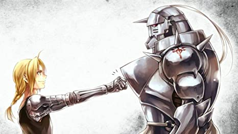
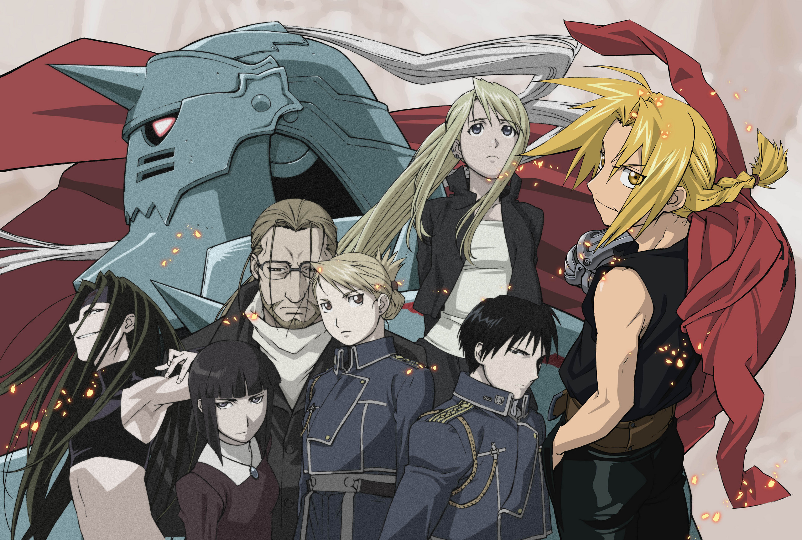

Full metal Alchemist Brotherhood
Plot

Fullmetal Alchemist is about two brothers named Edward and Alphonse Elric that are on a journey to get their original bodies back after they lost them during a failed human transmutation to make their dead mother come back to life.
Characters

The most important characters in FMAB include, Edward Elric, Alphonse Elric, Roy Mustang, all the humunculi, and Von Hohenhiem,
Edward Elric is the main character of the story and is important to the FMAB world becasue he has a special abiliy with his alchemy that allows him to preform alchemy without a transmutation circle. He can do this because he saw the "Truth", who is basicly the god of the FMAB world. This than makes him a sacrifice candidiate for a being called father, who is a homuculi(a being that is not made naturaly) who wants to kill god
Alphonse is also important becasue he also saw god and is a sacrifice candidiate
Roy is also a sacrifice candidiate
The humculi are trying to capture the sacrifice candidiate and prepare the landscape needed to kill god for their leader.-
Von Hohenhiem is an imortal being who is Edward and alphonses dad. He is also a living philosohers stone, which means he can create any thing or recontroct matter around him without moving.